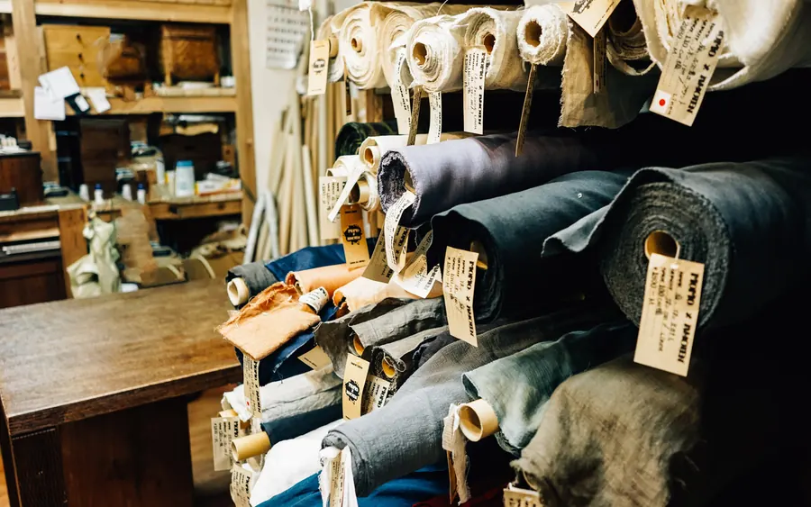

Featured · Uniform Guides
How to Get Uniform Sizing Right the First Time
A practical guide to collecting accurate sizing across a team roster — and avoiding the reorder cycle that comes from guessing.
Read ArticleGuides on sizing, embroidery, corporate branding and industry-specific workwear from our uniform specialists.

The step between your logo file and a clean, consistent embroidered emblem — explained simply.

Multi-location businesses face a specific branding challenge — here's how to solve it once.

Breathability, stretch and durability — a practical comparison of common scrub fabrics.
Button count, fabric weight and fit — the details that separate a good chef jacket from a great one.

What Class 1, 2 and 3 actually mean, and how to pick the right one for your site.

A durability comparison for teams choosing between two common industrial fabrics.

Six line items procurement teams forget to budget for — before they show up in the final invoice.
A practical guide to collecting accurate sizing across a team roster.

Why your embroidered logo can look slightly different from your screen — and how we prevent that.
How to roll out a new logo across every uniform without a chaotic transition period.
A side-by-side comparison for teams outfitting outdoor or cold-storage crews.

Fading, fraying and fit issues to watch for before they show up in customer feedback.
Try a different keyword or clear the category filter.
One email a month — new styles, embroidery tips and industry guides.